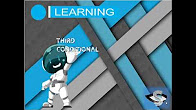

Learn your structures>
Make use of reason, learn the structures of the third conditional,
with ilearning, prepare to speak in just one day.
Learn about their uses in any situation>

We have their use, thanks to the native speaker contributors,
know where the third conditional is used,
remember that you can support us with your contributions.
I just had to read his examples,
and I ended up speaking English fluently for my first movie."
-George
Contextualized thanks to the examples>

Thanks to your examples, you only need to find the context that
is necessary for you at any time, and adapt it to your situation,
you can also add your own examples to help the i_learning community.
Video-Tutorial
Here we leave a video for you to learn in a better way,
if it is easier for you to learn by watching and listening here,
we leave you this video tutorial made by ourselves.
Help us improve>
I_learning is an open source project, made by and for you, if you are an altruistic programmer, go to github and help us to improve.
Learn playing>
Learn to have fun, with exercises to reinforce learning, compare your score with participants from around the world, demonstrate how much you know, receive rewards, play in world tournaments, anywhere, with i_learning alone.